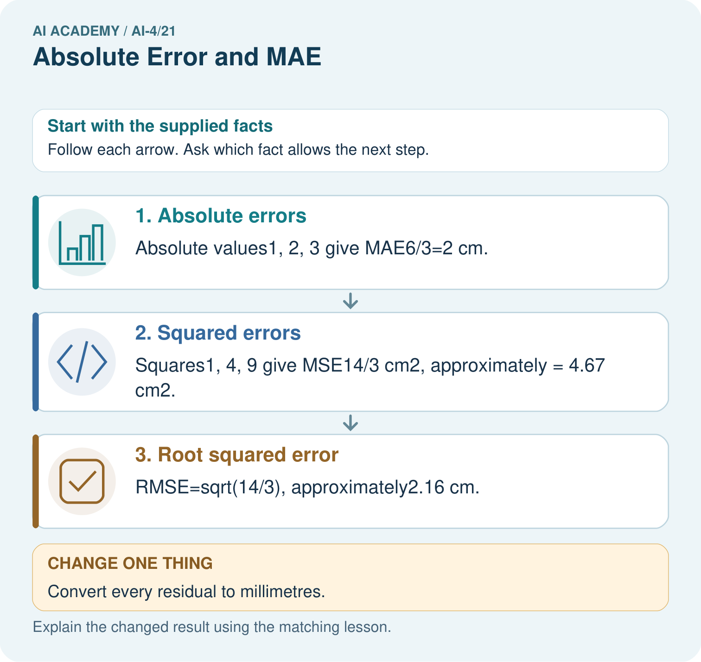
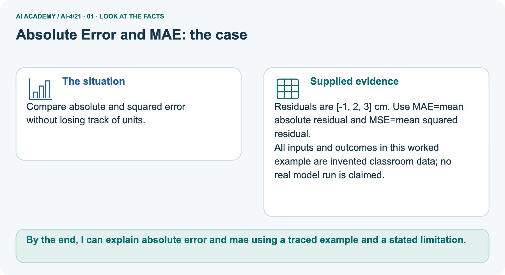
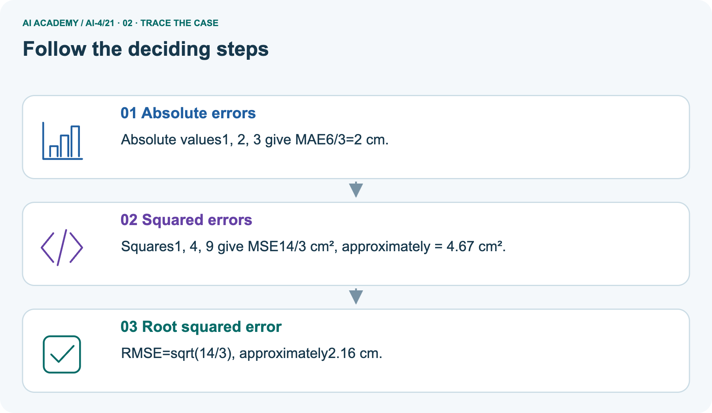
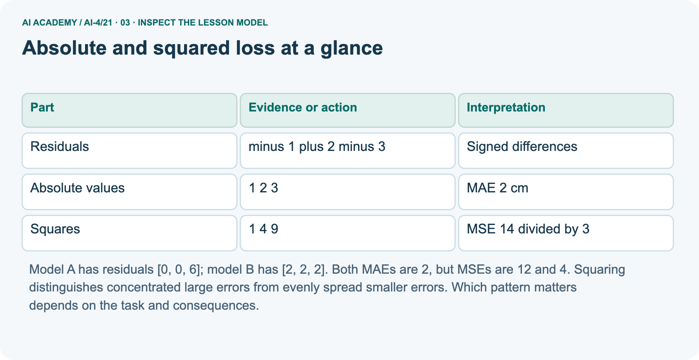
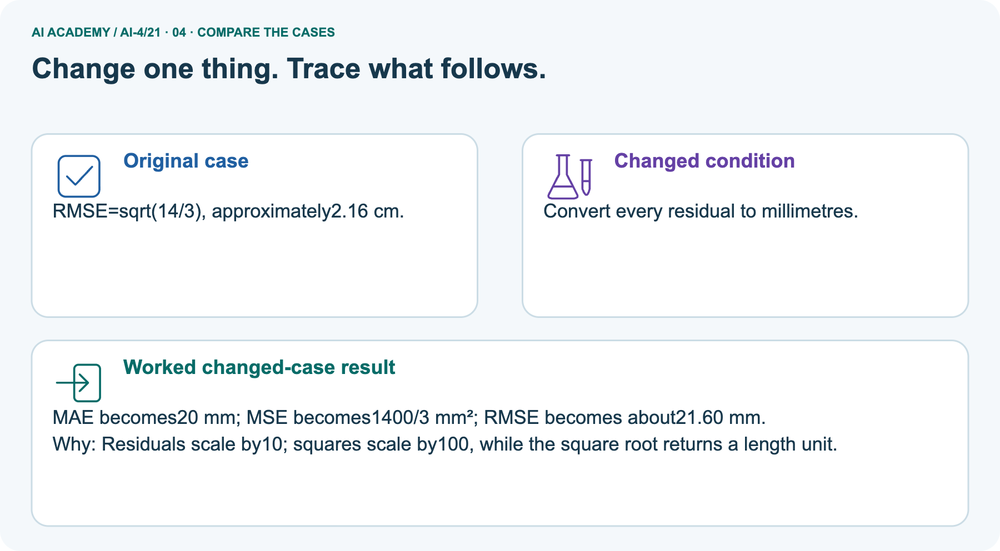
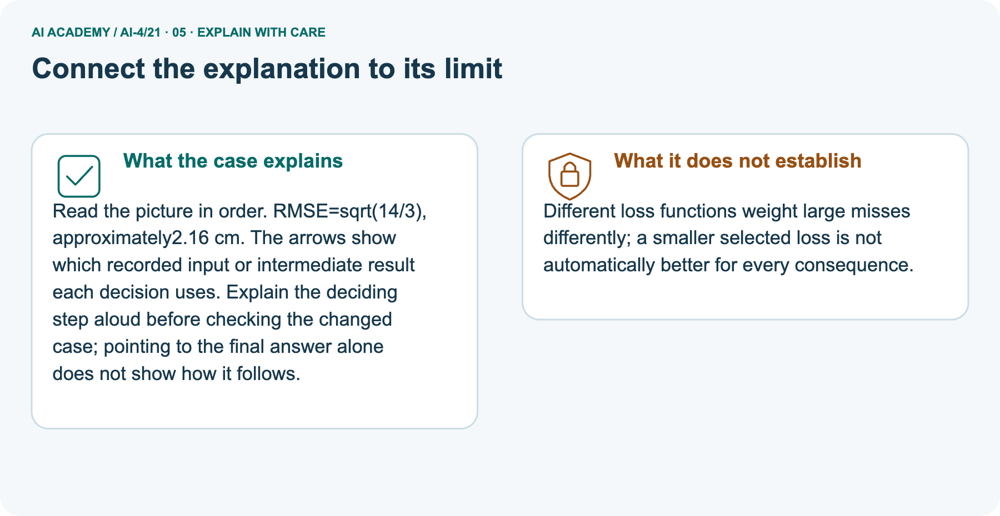
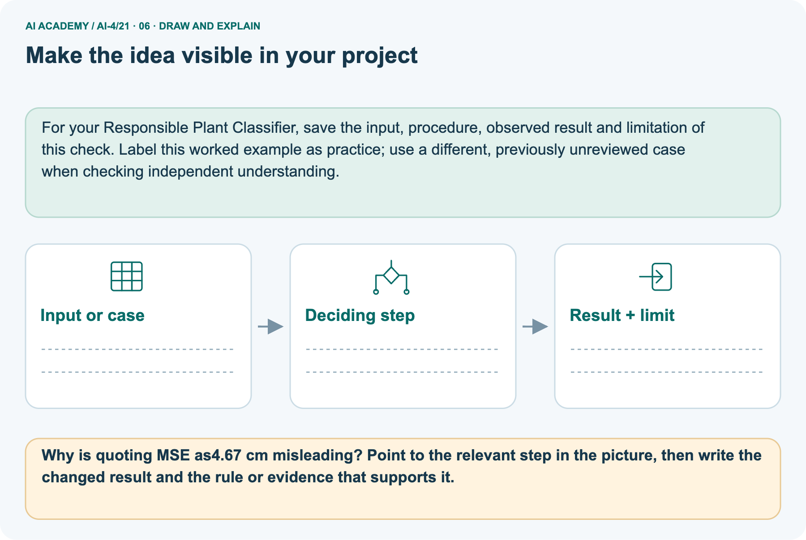

AI Academy · Level 4 · Grade 9 · Week 21 · Teacher guide
Absolute Error and MAE
Learn to understand, design, build, test and explain AI systems responsibly.
Project: Responsible Plant Classifier
Teacher guide · 1 of 9
Absolute Error and MAE
Prepare Absolute Error and MAE: check the target, prerequisites, resources and adaptable teaching schedule.
Teach the learning cycle
Primary target: Calculate MAE MSE and RMSE
| Session | Sequence and minutes | Resources |
|---|---|---|
| Session 1 · Understand · 45 min | 0–7: recall and prerequisite; 7–15: inspect the concrete case and predict; 15–30: teacher models the worked trace; 30–40: learners explain a step using the text and visual; 40–45: check the core idea. | Sections 1–6; record the brief recall in the workbook. |
| Session 2 · Practise · 45 min | 0–5: retrieve the procedure; 5–15: W2 completion practice; 15–23: explain and check with a partner; 23–30: each learner answers the misconception check; 30–40: targeted reteaching or a harder variation; 40–45: prepare the investigation. | Sections 7–10; use the matching workbook W2 and misconception check. |
| Session 3 · Investigate and transfer · 45 min | 0–5: retrieve the decision rule; 5–20: investigate or trace; 20–30: start the independent case; 30–38: connect the project; 38–43: act on feedback; 43–45: plan the return check. | Sections 9 and 11–14. Give extra time to finish the full task set; use Section 15 when the week includes a coding lab. |
This is a starting allocation of 135 minutes, not a validated duration. Preserve all named topics. Schedule extra time for connected examples, the full investigation, independent cases and project building.
Repeated copies of a case share one recorded attempt; they are not new evidence.
Retrieval answer guidance
Mean, Median, and Baselines
Without opening the old lesson, explain one key idea from Mean, Median, and Baselines. Give an example and a mistake that the idea helps you avoid.
Look for: Fit mean and median constant baselines on training targets
Reference example, not the only acceptable wording: Teacher explanation: Mean 6; median 5.
Error Analysis
Without opening the old lesson, explain one key idea from Error Analysis. Give an example and a mistake that the idea helps you avoid.
Look for: Categorize development errors using evidence
Reference example, not the only acceptable wording: Teacher explanation: Dim 4/12 about 33.3 percent; bright 3/18 about 16.7 percent.
Confusion Matrix
Without opening the old lesson, explain one key idea from Confusion Matrix. Give an example and a mistake that the idea helps you avoid.
Look for: Build a labelled confusion matrix from matched reference and prediction pairs
Reference example, not the only acceptable wording: Reference clear/predicted clear contains V1,V2: 2. Clear/blocked contains V3: 1. Blocked/clear contains V4,V5: 2. Blocked/blocked contains V6,V7,V8: 3. Matrix [[2,1],[2,3]].
Use the student module and workbook section with this exact week title. The worked case, independent question and answers below form one aligned lesson sequence.
What the learner must demonstrate
Actual=[3,8,10], predicted=[5,5,11]. Compute signed residuals and MAE. A student averages residuals and gets zero; is that MAE?
Concept to explain
Absolute error measures distance from truth without cancellation; MAE averages those distances in the target's original unit.
| Term | Meaning |
|---|---|
| absolute error | absolute value of actual minus predicted |
| MAE | mean of absolute errors |
| unit | measurement scale retained by MAE |
| cancellation | positive and negative errors offset |
Prepare the class
Use the supplied scenario, student illustrations and blank paper. For numeric work, offer counters or a calculator after learners show the setup. Fictional records are supplied; personal data and paid accounts are unnecessary.
Alternative compact allocation
This compact option is not the full-week schedule. Use the main teaching cycle and allow extra sessions for the investigation, independent work and project.
Allow 80 minutes: recall 8; explanation 12; worked demonstration 15; guided practice 20; independent assessment 15; project and reflection 10. Extend the lab into a second session when needed.
Preparation for the connected explanation
Teach two 45-minute sessions. This week focuses on absolute and squared loss. Model the worked example first, collect the new W 4 case independently before feedback, and use the fresh retry to check transfer.
Award credit for traceable reasoning and bounded claims, including justified uncertainty.
Readiness answer
The training mean among all constant predictions.
Printed student lesson and workbook
Paper, pencils and a calculator for fractions
The fictional examples and a blank evidence table
Optional Python 3 editor; no external packages or AI accounts required
End goal for the pictorial case
By the end, I can explain absolute error and mae using a traced example and a stated limitation.
This added worked case illustrates the week’s main idea. Retain all original and connected topics; schedule its practice within the teaching cycle.
Teacher guide · 2 of 9
Explain the mechanism
Model Absolute Error and MAE using the supplied case, labelled mechanism and reasoning. Make the scope of each conclusion explicit.
Trace the information, fitted behavior, and evaluation proof separately.
Question to explain
QUESTION Calculate residuals, absolute errors, and mean absolute error.
MODEL IDEA Absolute error measures distance from truth without cancellation; MAE averages those distances in the target's original unit.
PROOF NEEDED Use an unseen case, visible calculation, error analysis, and a stated limitation.
How the mechanism works
UNDER THE HOOD Actual heights: 10, 14, 20; predictions: 12, 13, 17. Residuals: −2, +1, +3 cm; absolute errors: 2, 1, 3 cm.
Draw a fresh data → model → prediction → evaluation trace:
Predict first. Then check each step. A correct answer without visible evidence cannot be audited.
Step 1
STEP 1 Actual heights: 10, 14, 20; predictions: 12, 13, 17.
Step 2
STEP 2 Residuals: −2, +1, +3 cm; absolute errors: 2, 1, 3 cm.
Step 3
STEP 3 MAE = (2 + 1 + 3) ÷ 3 = 2 cm.
Step 4
STEP 4 Compare with a baseline on the same cases and inspect the largest error.
CHECK Verify the denominator, unit, split, class definition, and data version before interpreting a score.
Recalculate, retrace, or restate the evidence independently:
Concrete teaching case
The teaching case
Actual=[3,5,9], predicted=[2,7,6] cm.
The teaching case
Calculate MAE.
Exact explanation to model
Why the result follows
Absolute errors=[1,2,3]; mean=2 cm. Do not cancel signed errors before taking absolute values.
Explain the added worked example
Explain the added worked example · 1
A loss summarizes error magnitude without positive and negative cancellation. MAE averages absolute residuals. MSE averages squared residuals and penalizes large magnitudes more strongly.
RMSE takes the square root of MSE so it returns to the target unit. These are different questions, not interchangeable labels.
Use fictional classroom data throughout this investigation. Keep the task, units, reference labels and data split visible as you reason.
Earlier weeks supplied the model-building process; this week examines absolute and squared loss.
Residuals [-1, 2,-3] cm have absolute errors [1, 2, 3], so MAE=6/3=2 cm. Squared errors [1, 4, 9] sum to 14, so MSE=14/3 square cm and RMSE=sqrt(14/3), about 2.16 cm. Keep the square and the average in the correct order.
Trace the calculation on paper before running this optional Python check. Use the stated fictional inputs and compare intermediate values. The code checks this example; your independent workbook case uses different evidence.
Key terms
| Term | Meaning |
|---|---|
| MAE | Mean absolute error |
| MSE | Mean squared error |
| RMSE | Square root of mean squared error |
| Loss | A numerical penalty for prediction errors |
Model the reasoning aloud
Use the complete worked example below before asking learners to complete W2. Reveal a small part, invite a prediction, then explain the deciding step.
These teacher notes contain solutions; do not reveal the independent case answer during modelling.
Absolute and squared loss at a glance
| Thinking move | Teacher prompt |
|---|---|
| Plan | What is given? What is the question? Which procedure fits these facts? |
| Do | Point to each input and intermediate step in the worked trace. Name the rule that allows the next step. |
| Check | Does the output answer the question? Which assumption or limitation prevents a larger claim? |
Use the diagram and verbal explanation together. Ask learners to match a sentence to a specific visual step; do not assign learners fixed visual or auditory learning styles.
A pictorial worked case: Absolute Error and MAE
Compare absolute and squared error without losing track of units.
The facts we will use
Supplied facts
Residuals are [-1, 2, 3] cm. Use MAE=mean absolute residual and MSE=mean squared residual.
Supplied facts
All inputs and outcomes in this worked example are invented classroom data; no real model run is claimed.

Read the picture one step at a time
Why this result follows
Why the result follows
Read the picture in order. RMSE=sqrt(14/3), approximately2.16 cm. The arrows show which recorded input or intermediate result each decision uses.
Explain the deciding step aloud before checking the changed case; pointing to the final answer alone does not show how it follows.
What this example does not establish
Keep the stated limit
Different loss functions weight large misses differently; a smaller selected loss is not automatically better for every consequence.
Change one thing in the pictured case
Change one thing
Change: Convert every residual to millimetres.
Predicted result
Prediction: MAE becomes20 mm; MSE becomes1400/3 mm²; RMSE becomes about21.60 mm.
Why the result follows
Reason: Residuals scale by10; squares scale by100, while the square root returns a length unit.
Ask while showing the picture
Ask while showing the picture · 2
Cover the result. Ask learners to name the inputs and predict the next step. Uncover one step, connect the icon to the actual procedure, and explain its evidence. Then change the supplied condition and compare.
The picture is a representation; it does not document execution of a real AI model.
Teacher guide · 3 of 9
Demonstrate and guide practice
Demonstrate Absolute Error and MAE, reduce support deliberately and check individual reasoning before discussing answers.
Board sequence
1. Put the facts on the board
Write the given facts: Actual=[3,5,9], predicted=[2,7,6] cm.
2. State the decision to explain
Write the question to explain: Calculate MAE.
3. Reveal the worked reasoning
Reveal after predictions: Absolute errors=[1,2,3]; mean=2 cm. Do not cancel signed errors before taking absolute values.
Hold back the independent task
Keep for an independent attempt: Actual heights are 4, 8 and 10 cm; predictions are 5, 6 and 13 cm. Calculate absolute errors and MAE.
Classroom dialogue
Ask the class
Ask: Which facts are given, and which would we have to assume? Learners mark relevant details before discussing answers.
Language to model
Say: Predict first. Show the rule, information path or calculation that would produce the result. A correct guess is not yet an explanation.
Reveal reasoning one step at a time. Explain why a tempting alternative fails. Write units and denominators for arithmetic, trace conditions for decisions, and identify supporting sources for claims.
In pairs, one learner solves while the other checks evidence; exchange roles. Remove the worked answer before independent assessment.
Model these guided questions
Guided response: MSE 14/3 square cm; RMSE sqrt(14/3) about 2.16 cm. Exit response: Keep the declared primary metric and disclose any additional metric and reason. Report the large error and complete evaluation.
Case-specific teaching sequence
| Stage | Teacher action |
|---|---|
| Session 1 start to 7 minutes | Use the prerequisite question: Which constant minimizes training squared error? Check the explanation before proceeding. |
| 7 to 18 minutes | Read the opening and model the worked evidence. Ask students to identify mae in context. |
| 18 to 32 minutes | Complete W 1 and W 2 with support: compute mae; compute squared loss. Require the evidence, not only the final response. |
| 32 to 45 minutes | Read the visual row by row. Collect the guided explanation and compare reasoning in pairs. Trace the Python check after the paper calculation. |
| Session 2 start to 8 minutes | Retrieve the distinction between mae and mse. Invite a counterexample to an overconfident claim. |
| 8 to 20 minutes | Discuss the application and complete W 3: Why do [0, 0, 6] and [2, 2, 2] have equal MAE but unequal MSE? |
| 20 to 35 minutes | Collect W4 independently before giving hints. Assess these outcomes: Calculate MAE MSE and RMSE; Explain how squaring changes sensitivity to large errors. Record any support used. |
| 35 to 45 minutes | Use W 5 and the exit response to assess limits. Give targeted feedback, then the fresh retry. Save evidence of independent understanding. |
Reduce help deliberately
Completion practice
Completion task: Give MSE and RMSE with units.
Reasoning to listen for
Teacher check: Teacher explanation: MSE 14/3 square cm; RMSE sqrt(14/3) about 2.16 cm.
Start by identifying the given inputs together. Leave the intermediate steps blank. If needed, model one step, then withdraw that help on the next step. Move to a full trace only when the partial trace is understood.
For partners, alternate explainer and checker; collect a response from every learner before discussion.
Individual reasoning check
Use the worked case for Absolute and squared loss. Proposed explanation: “A final answer is enough”. Decide whether this explanation is supported. Point to the step or supplied fact that decides; explain your repair if needed.
Expected repair
Expected correction: Ask for the relevant counts, units, procedure or saved record. For this week: (1+2+3)/3=2 cm.
Collect explanations, not only yes/no votes. If a misunderstanding is common, re-model the relevant step for the class.
If it affects a few learners, give a short targeted group explanation while others solve a more demanding variation.
Pictorial practice question
Why is quoting MSE as4.67 cm misleading? Point to the relevant step in the picture, then write the changed result and the rule or evidence that supports it.
Reasoned teacher answer
Its unit is cm², not cm. RMSE is the corresponding square-root statistic with cm units. Changed-case check: MAE becomes20 mm; MSE becomes1400/3 mm²; RMSE becomes about21.60 mm.
Residuals scale by10; squares scale by100, while the square root returns a length unit.
Changed-case reasoning: MAE becomes20 mm; MSE becomes1400/3 mm²; RMSE becomes about21.60 mm. Residuals scale by10; squares scale by100, while the square root returns a length unit.
Collect each learner’s explanation before discussion. Use the first missing connection between input, deciding step and result to choose support. This question is worked-case practice, not fresh mastery evidence.
Teacher guide · 4 of 9
Run the weekly evidence lab
Run the Absolute Error and MAE investigation and use the first unsupported step to choose a teaching response.
Keep the test conditions fixed, record every result, and change only one planned factor.
1. Write the hypothesis and expected evidence before running.
2. MAE Lab: calculate each row, verify units and denominator, then compare model and baseline on identical examples.
3. Run one normal, one boundary, one missing, and one shifted case.
4. Calculate the metric from raw counts or row-level errors.
5. Interpret what changed, what did not, and what remains unsafe or unknown.
Make the lab runnable
Use the concrete case as the shared normal case and the independent question as a second case. Each pair creates a boundary or missing-information case and predicts its result before testing.
Keep the expected result separate from an observed mistake.
| Record | What to capture |
|---|---|
| Input or evidence | Exact data, instruction or claim |
| Expected result | Answer or safe fallback declared before the run |
| Observed result | Actual result, including errors |
| Explanation | Rule, calculation or evidence explaining the outcome |
| Next test | One justified change and a new prediction |
Diagnose and reteach
MISCONCEPTION TO REPAIR Average signed residual is a safe replacement for average absolute error.
For guessing, return to given facts and request a trace. For vocabulary without application, use one example and one non-example. For arithmetic errors, check the setup before the calculation.
Finish with a different uncoached case before recording mastery.
Address these additional misconceptions
A final answer is enough: Ask for the relevant counts, units, procedure or saved record. For this week: (1+2+3)/3=2 cm.
A stronger claim makes a stronger project: Keep the declared primary metric and disclose any additional metric and reason. Report the large error and complete evaluation.
The new case can be copied from the example: The independent task changes the evidence. Require a fresh explanation: MAE 2 m; MSE 20/3 square m; RMSE about 2.58 m. In cm, MAE 200, MSE 200000/3, RMSE about 258.20.
Match the support to the first error
| What the response shows | Next teaching action |
|---|---|
| Missing or misread facts | Read the case aloud, mark supplied versus unknown facts, and let the learner restate it. |
| Wrong procedure | Return to the deciding step in the worked case. Contrast it with the proposed incorrect explanation. |
| Arithmetic or implementation error | Trace intermediate values or lines; preserve the first mismatch and retry that step. |
| Correct result without a reason | Ask for a trace and a changed case before marking independent understanding. |
| An unsupported wider claim | Ask which supplied evidence supports the claim and which further observation would be needed. |
Offer an oral explanation, drawing, enlarged visual or fewer examples when that removes a reading/writing barrier. Keep the same reasoning goal.
Stretch secure learners by changing a boundary or assumption and asking them to defend the effect, not simply by assigning more of the same questions.
Teacher guide · 5 of 9
Assess and explain the answers
Use the Absolute Error and MAE questions, teacher keys and criteria after the relevant attempts. Previously discussed cases are practice; protect the separately selected independent task.
Worked case answer
Teacher key · Worked case answer
Absolute errors=[1,2,3]; mean=2 cm. Do not cancel signed errors before taking absolute values.
Independent question
Independent question · withhold the key
Actual heights are 4, 8 and 10 cm; predictions are 5, 6 and 13 cm. Calculate absolute errors and MAE.
Expected independent answer
Teacher key · Expected independent answer
Absolute errors are 1, 2 and 3 cm. MAE is (1+2+3)/3 = 2 cm. Signed errors must not cancel.
What counts as evidence
| Criterion | 0 points | 1 point | 2 points |
|---|---|---|---|
| Result | Incorrect or absent | Partly correct | Correct with necessary conditions |
| Reasoning | No supporting trace | Some steps | Clear mechanism, calculation or source support |
| Limit | Overclaims certainty | Vague limitation | Relevant uncertainty or missing fact |
| Transfer | Copies without adapting | Adapts with prompts | Solves a changed case independently |
Use 6/8 as a classroom checkpoint, with 2 required for both Result and Reasoning. This is a proposed teaching rule, not a validated certification threshold.
Do not count a coached answer as independent mastery; correct unsafe or unsupported claims regardless of total.
Feedback
Ask the learner to find the evidence that challenges this claim: “Averaging signed errors is the same as mean absolute error.” Keep the first attempt and an uncoached retry separate.
Original transfer answer
Teacher key · Original transfer answer
Residuals=[-2,3,-1], summing to 0. Absolute errors=[2,3,1], MAE=6/3=2 in the target's units. Signed errors can cancel even when every prediction is wrong.
Explanations for the additional workbook examples
W1 Compute MAE
Workbook question · W1
Calculate MAE for the worked residuals.
Teacher reasoning · W1
Teacher explanation: (1+2+3)/3=2 cm.
Teacher reasoning · W1
MAE uses absolute residual sizes, so add 1, 2 and 3 and divide by three: (1+2+3)/3 = 2 cm. Positive and negative signed residuals must not cancel in this calculation.
State centimetres because absolute error retains the target unit.
W2 Compute squared loss
Workbook question · W2
Give MSE and RMSE with units.
Teacher reasoning · W2
Teacher explanation: MSE 14/3 square cm; RMSE sqrt(14/3) about 2.16 cm.
Teacher reasoning · W2
Square the residual sizes to get 1, 4 and 9; their mean is 14/3 square centimetres. Take the square root to obtain RMSE sqrt(14/3), approximately 2.16 cm. MSE and RMSE describe related quantities but have different units.
W3 Compare patterns
Workbook question · W3
Why do [0, 0, 6] and [2, 2, 2] have equal MAE but unequal MSE?
Teacher reasoning · W3
Teacher explanation: Both absolute sums are 6. Squared sums are 36 and 12, so MSE 12 versus 4.
W4 Apply independently
Workbook question · W4
Residuals [-2, 0, 4] m: calculate MAE MSE RMSE and the result of converting to cm.
Teacher reasoning · W4
Teacher explanation: MAE 2 m; MSE 20/3 square m; RMSE about 2.58 m. In cm, MAE 200, MSE 200000/3, RMSE about 258.20.
W5 Choose honestly
Workbook question · W5
A team switches from MSE to MAE only after seeing a bad large error. What should be reported?
Teacher reasoning · W5
Teacher explanation: Keep the declared primary metric and disclose any additional metric and reason. Report the large error and complete evaluation.
Assess independent transfer
Independent question · withhold the key
Selected case: Residuals [-2, 0, 4] m: calculate MAE MSE RMSE and the result of converting to cm.
Selected case answer
Teacher key · Selected case answer
Teacher explanation: MAE 2 m; MSE 20/3 square m; RMSE about 2.58 m. In cm, MAE 200, MSE 200000/3, RMSE about 258.20.
| Dimension | Evidence required |
|---|---|
| Explanation | Names the applicable idea or procedure and ties it to the supplied facts. |
| Trace and result | Preserves the given inputs and shows the relevant intermediate steps; distinguishes a prediction from an observed execution. |
| Limits | States the assumptions, missing evidence or conditions under which the result would change. |
Teacher key · Selected case answer
Record each dimension as not yet, with support, or independent. Accept a valid alternative procedure with a defensible trace.
Do not penalise an honestly recorded model failure if the learner correctly explains its evidence and limits.
Feedback that the learner uses
Name the earliest unsupported step and give one action to repair it. Have the learner make that repair now and explain why. Then assess the relevant skill on a fresh, fully specified case.
Confirm it was not previously practised with feedback; solve and check the new case before assigning it. A follow-up design prompt is a starting brief, not automatically an equivalent test.
Teacher guide · 6 of 9
Connect and extend learning
Connect Absolute Error and MAE to Responsible Plant Classifier, adapt support and plan a later changed-case check.
Responsible Plant Classifier
Use MAE correctly in the optional growth model; keep classifier and regression metrics clearly separated.
Keep the decision, input, result, explanation and remaining limitation in the project evidence record. Retrieve this record next week rather than restarting the project.
Support and stretch
Use a tiny labelled dataset, explicit units and a named positive class. Stretch: require a baseline, held-out evaluation and subgroup or shifted-condition analysis with denominators.
Exit reflection
Ask for one decision the learner can now justify and one situation requiring more evidence or human review. Confidence ratings are separate from correct independent performance.
Bridge to the next week
Next: Week 22: Train a Regression Model. Retrieve today’s evidence and identify what carries forward and what is new.
Support and fresh reassessment
Provide a blank evidence table and allow a verbal explanation before writing. Highlight the given conditions without supplying the W 4 conclusion. Use mae and mse in full sentences.
Extension: alter one condition in the worked example and explain which conclusion changes and which remains supported.
For independent W 4, require: MAE 2 m; MSE 20/3 square m; RMSE about 2.58 m. In cm, MAE 200, MSE 200000/3, RMSE about 258.20. Fresh retry residuals [-1, 1, 4]: MAE 2, MSE 6, RMSE sqrt 6 about 2.45 in corresponding units.
Require units and operation order. Mark each criterion as independent, supported or not yet demonstrated. Reassess the reasoning after feedback; do not replace the first attempt silently.
Next week: Fitting a line. Carry forward the saved evidence and the distinction between development choices and justified claims.
Plan the delayed return
Suggested return points in this level: ai-4/22, ai-4/24, ai-4/27. Use actual classroom dates, adjusting for holidays and gaps. One, three and six teaching weeks are scheduling choices, not a claimed optimal spacing.
At a delayed check, ask for the idea from memory and a changed application. Compare with the earlier independent response and record support used.
For a new level, revisit the previous capstone before checking the new prerequisites.
| Record | Teacher evidence |
|---|---|
| Learner code and date | |
| Concept and case used; prior exposure | |
| Explanation / trace / limits | |
| Support and first repair | |
| Changed case and delayed outcome | |
| Next teaching action |
Use the evidence to choose reteaching or the next step. A completed page, confidence rating or attractive project does not by itself demonstrate understanding.
Project evidence from this case
For your Responsible Plant Classifier, save the input, procedure, observed result and limitation of this check.
Label this worked example as practice; use a different, previously unreviewed case when checking independent understanding.
Teacher guide · 7 of 9
Prepare, teach and assess
Use this preparation summary alongside the detailed Absolute Error and MAE lesson; it is a checklist rather than a replacement for the full sequence.
Teaching target
Teaching target: Calculate MAE MSE and RMSE
Prepare the labelled worked-case picture, the matching workbook, fictional input cards and a place for individual responses. Check a local Python 3 environment before class; have a paper-trace version ready.
| Session | Plan | Resources |
|---|---|---|
| Session 1 · Understand · 45 min | 0–7: recall and prerequisite; 7–15: inspect the concrete case and predict; 15–30: teacher models the worked trace; 30–40: learners explain a step using the text and visual; 40–45: check the core idea. | Sections 1–6; record the brief recall in the workbook. |
| Session 2 · Practise · 45 min | 0–5: retrieve the procedure; 5–15: W2 completion practice; 15–23: explain and check with a partner; 23–30: each learner answers the misconception check; 30–40: targeted reteaching or a harder variation; 40–45: prepare the investigation. | Sections 7–10; use the matching workbook W2 and misconception check. |
| Session 3 · Investigate and transfer · 45 min | 0–5: retrieve the decision rule; 5–20: investigate or trace; 20–30: start the independent case; 30–38: connect the project; 38–43: act on feedback; 43–45: plan the return check. | Sections 9 and 11–14. Give extra time to finish the full task set; use Section 15 when the week includes a coding lab. |
Before class, solve the supported practice: Give MSE and RMSE with units.
Supported practice answer
Reasoned practice answer: Teacher explanation: MSE 14/3 square cm; RMSE sqrt(14/3) about 2.16 cm.
Check every learner before discussion: Use the worked case for Absolute and squared loss. Proposed explanation: “A final answer is enough”. Decide whether this explanation is supported.
Point to the step or supplied fact that decides; explain your repair if needed.
Repair the misconception
Misconception repair: Ask for the relevant counts, units, procedure or saved record. For this week: (1+2+3)/3=2 cm.
Support without giving away the answer
Support: read the exact case aloud, enlarge the labelled picture, supply input cards and model only the first deciding step. Accept a spoken explanation or drawing; retain the reasoning goal.
Extend the reasoning
Extension: Convert every residual to millimetres. Require a prediction and a reason before comparing. Expected result: MAE becomes20 mm; MSE becomes1400/3 mm²; RMSE becomes about21.60 mm.
Reason: Residuals scale by10; squares scale by100, while the square root returns a length unit.
Protect the independent attempt
Independent assessment: withhold the reserved answer until the learner has attempted the new case. Record support separately from correctness.
| Criterion | Not yet | With support | Independent |
|---|---|---|---|
| Explanation | Names an answer without a deciding fact | Uses a hint to link fact and decision | Explains the deciding fact in own words |
| Trace or test | Cannot connect input and result | Completes steps with prompts | Traces or tests a changed case accurately |
| Limits and revision | Claims more than evidence supports | Names a limit after a prompt | States a defensible limit and useful next test |
Project checkpoint
Project checkpoint: Evaluate and revise. Compare with your starting method, explain errors and record a justified revision.
Use the weekly teacher answer for topic-specific reasoning. A saved progress tick is an activity record; judge mastery from the learner’s explanation and evidence.
Teacher guide · 8 of 9
Use feedback, labs and repair paths
Use feedback, earlier review and portfolios purposefully. Apply the coding routine only when this lesson has an executable lab.
Use the two formative questions as supported practice, not as independent mastery scores. Discuss the deciding evidence rather than accepting a guessed selection.
The feedback comes from the reviewed public worked case. Do not reveal the separately reserved independent teacher answer until the learner has attempted that case.
Ask students to predict before running code. Preserve errors and actual outputs; collect a changed test and an explanation. The branch-boundary and indexing lessons deliberately include failure cases.
Use the earlier worked-explanation links to address a specific missing building block, then return to the current question. Adapt this suggestion after observing the learner; it is not an automatic diagnosis.
Collect the completed-work portfolio as evidence. Record support separately from correctness, and assess explanation, trace/test and limitations. Progress ticks and quiz selections alone do not establish mastery.
Teacher guide · 9 of 9
Visual concept journey
Show one Absolute Error and MAE graphic at a time, request a prediction and discuss its trace before the independent assessment.
Use one picture at a time. Hide a worked result before asking for a prediction, then reveal it for feedback. These are supported teaching cases; retain the separate independent assessment for a fresh first attempt.
01. Absolute Error and MAE: the case

Compare absolute and squared error without losing track of units. Supplied facts: Residuals are [-1, 2, 3] cm. Use MAE=mean absolute residual and MSE=mean squared residual.
All inputs and outcomes in this worked example are invented classroom data; no real model run is claimed.
Point to the given fact that matters most. Explain why it matters.
Discuss while showing the picture
Teacher prompt: Point to the given fact that matters most. Explain why it matters. Ask learners to describe one label or arrow in ordinary words. Use the adjacent transcript if the image is difficult to see.
02. Follow the deciding steps

Absolute errors: Absolute values1, 2, 3 give MAE6/3=2 cm. → Squared errors: Squares1, 4, 9 give MSE14/3 cm², approximately = 4.67 cm². → Root squared error: RMSE=sqrt(14/3), approximately2.16 cm.
Point to each numbered stage and explain which recorded input it uses.
Discuss while showing the picture
Teacher prompt: Point to each numbered stage and explain which recorded input it uses. Ask learners to describe one label or arrow in ordinary words. Use the adjacent transcript if the image is difficult to see.
03. Absolute and squared loss at a glance

Absolute and squared loss at a glance. Residuals | minus 1 plus 2 minus 3 | Signed differences. Absolute values | 1 2 3 | MAE 2 cm. Squares | 1 4 9 | MSE 14 divided by 3
Read the labels and values. Explain the relationship the model shows.
Discuss while showing the picture
Teacher prompt: Read the labels and values. Explain the relationship the model shows. Ask learners to describe one label or arrow in ordinary words. Use the adjacent transcript if the image is difficult to see.
04. Change one thing. Trace what follows.

Original case: RMSE=sqrt(14/3), approximately2.16 cm. Changed condition: Convert every residual to millimetres. Expected result: MAE becomes20 mm; MSE becomes1400/3 mm²; RMSE becomes about21.60 mm.
Reason: Residuals scale by10; squares scale by100, while the square root returns a length unit.
Predict before checking the worked changed-case result. Name what changed and what the supplied facts allow you to conclude.
Discuss while showing the picture
Teacher prompt: Predict before checking the worked changed-case result. Name what changed and what the supplied facts allow you to conclude. Ask learners to describe one label or arrow in ordinary words.
Use the adjacent transcript if the image is difficult to see. Changed-case reasoning: Residuals scale by10; squares scale by100, while the square root returns a length unit.
05. Connect the explanation to its limit

Read the picture in order. RMSE=sqrt(14/3), approximately2.16 cm. The arrows show which recorded input or intermediate result each decision uses.
Explain the deciding step aloud before checking the changed case; pointing to the final answer alone does not show how it follows.
Limit: Different loss functions weight large misses differently; a smaller selected loss is not automatically better for every consequence.
Explain the case, then point to a limit on the claim.
Discuss while showing the picture
Teacher prompt: Explain the case, then point to a limit on the claim. Ask learners to describe one label or arrow in ordinary words. Use the adjacent transcript if the image is difficult to see.
Keep the stated scope: Different loss functions weight large misses differently; a smaller selected loss is not automatically better for every consequence.
06. Make the idea visible in your project

For your Responsible Plant Classifier, save the input, procedure, observed result and limitation of this check.
Label this worked example as practice; use a different, previously unreviewed case when checking independent understanding. Draw your input, deciding step, result and limit.
Supported question: Why is quoting MSE as4.67 cm misleading? Point to the relevant step in the picture, then write the changed result and the rule or evidence that supports it.
Draw your project trace and justify the deciding step using evidence.
Discuss while showing the picture
Teacher prompt: Draw your project trace and justify the deciding step using evidence. Ask learners to describe one label or arrow in ordinary words. Use the adjacent transcript if the image is difficult to see.
Supported practice key: Its unit is cm², not cm. RMSE is the corresponding square-root statistic with cm units. Changed-case check: MAE becomes20 mm; MSE becomes1400/3 mm²; RMSE becomes about21.60 mm.
Residuals scale by10; squares scale by100, while the square root returns a length unit.